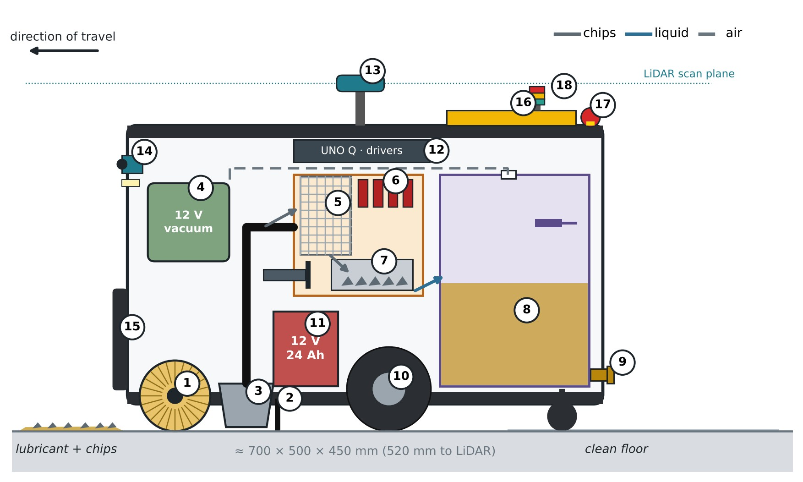

Universidad Panamericana · Faculty of Engineering · Mexico City
Proyecto Mecatrónico I · Final capstone project · Technical report
Autonomous Robot for Industrial Waste Cleaning and Separation
A shift-change cleaning robot that recovers lubricant and metal chips from a machining-plant floor
and delivers them in two separate waste streams · Arduino UNO Q (STM32U585 + Qualcomm QRB2210)

Everything in this report lives in the project repository
Source code · requirements · risk registers · calculators · decision records · test protocols · deliverables. How to use it: "Read this first" (right after the contents) and Appendix A.